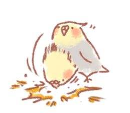
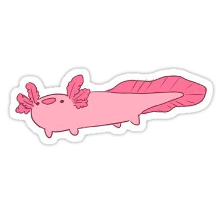
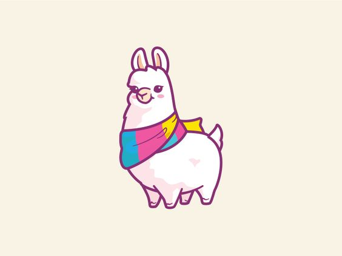

Origami Designs
Origami Designs
About Us
Follow Us
Origami Instructions and Diagrams
Hi there, we have put up a database of Origami Intructions, so you can easily ascess Origami Intructions without reasearching.
Cat
Cats are one of, if not the most, popular pet in the world.
There are over 500 million domestic cats in the world.
Cats conserve energy by sleeping for an average of 13 to14 hours a day.
Dog
Dogs noses are wet to help absorb scent chemicals.
The Beatles song 'A Day in the Life' has a frequency only dogs can hear.
A Bloodhound's sense of smell can be used as evidence in court.

Bird
Most common garden birds have an average age of between 2 and 5 years.
Birds originally descended from reptiles.
There are around 10000 different species of birds worldwide.
Pengiun
Penguins can drink sea water.
The Emperor Penguin is the tallest of all penguin species, reaching as tall as 120 cm (47 in) in height.
Penguins eat a range of fish and other sealife that they catch underwater.
Frog
Frogs absorb water through their skin so they don't need to drink.
Frogs can lay as many as 4,000 eggs in frogspawn.
Frogs have long back legs and webbed feet for jumping and swimming.
Octopus
They have three hearts and blue blood.
Being boneless, they can squeeze into (or out of) tight spaces.
They are quite intelligent and have been observed using tools.

Axolotl
Axolotl has unique capability to regenerate (re-create) different parts of its body in the case they are lost or damaged.
axolotls will play dead to escape being eaten
Most of their body is made of cartilage rather than bone.

Dogs
Llamas can grow as much as 6 feet tall though the average llama between 5 feet 6 inches and 5 feet 9 inches tall
Llamas weigh between 280 and 450 pounds and can carry 25 to 30 percent of their body weight
A 400-pound male llama can carry about 100 to 120 pounds on a trek of 10 to 12 miles with no problem